Project gallery
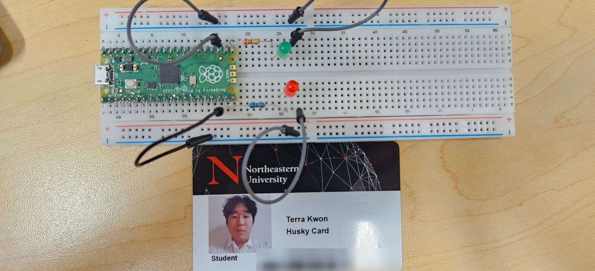

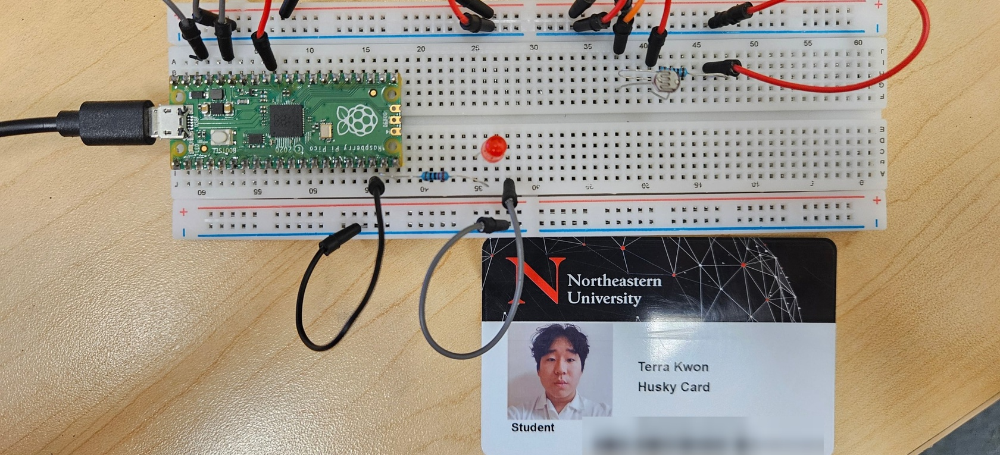
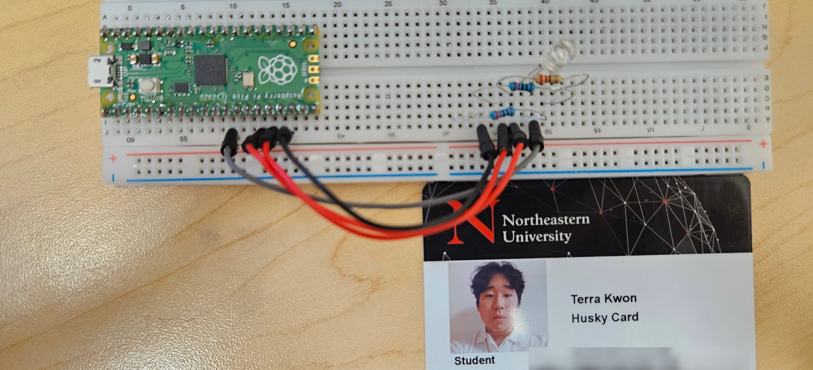
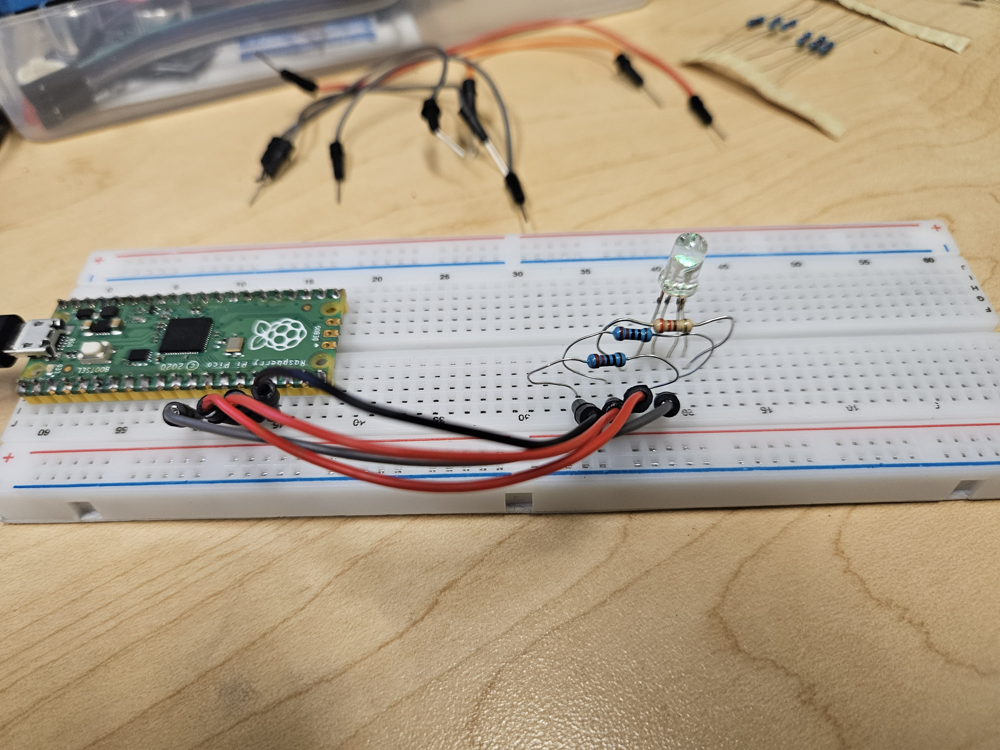
The Pico 0-1 project exists to improve my understanding on how use the Raspberry Pi kit and it components. In this activity I practiced with the breadboard, wiring, LEDs, LDRs, and the python code used to for the Raspberry Pi itself
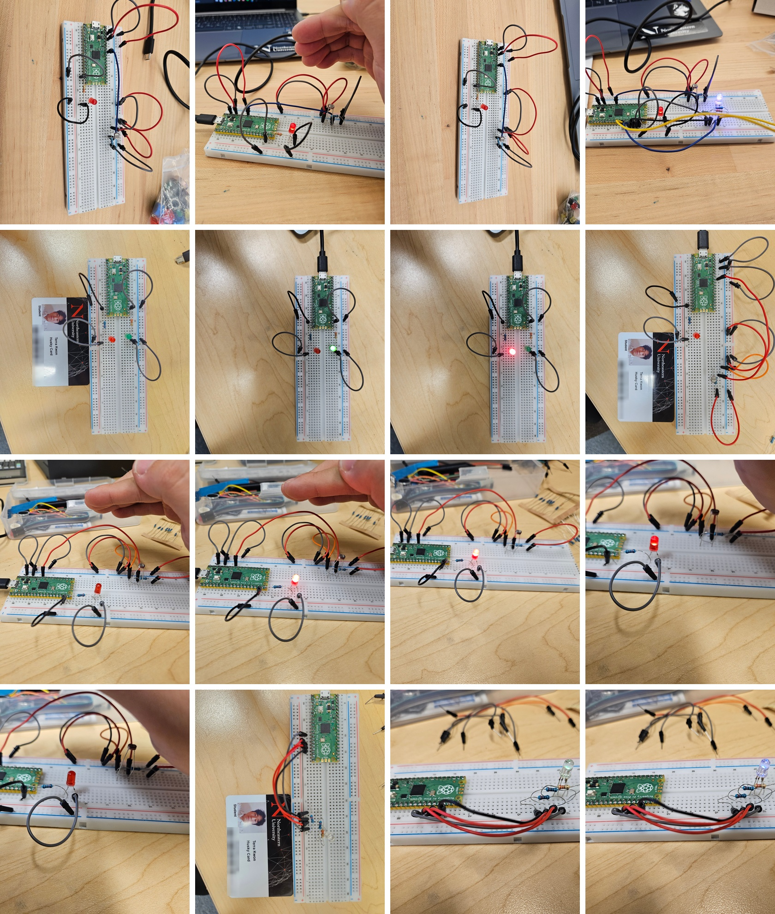
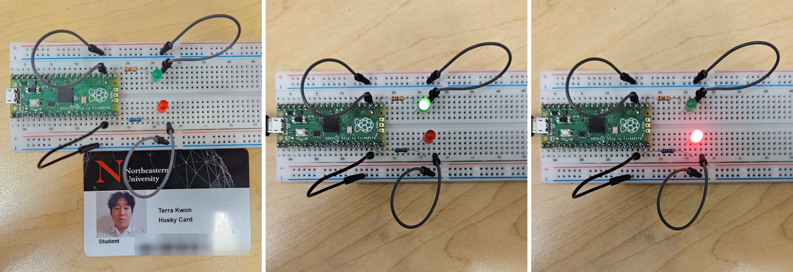
For Challenge 1, I edited the code given to me in the assignment to give alternating blinking lights coming from two different LEDs. I wired the LEDs on two separate sides of the Raspberry Pi so each LED is connected to a different GPIO pin. For the wiring I just copied the initial wiring on the other side and connected to a different port.
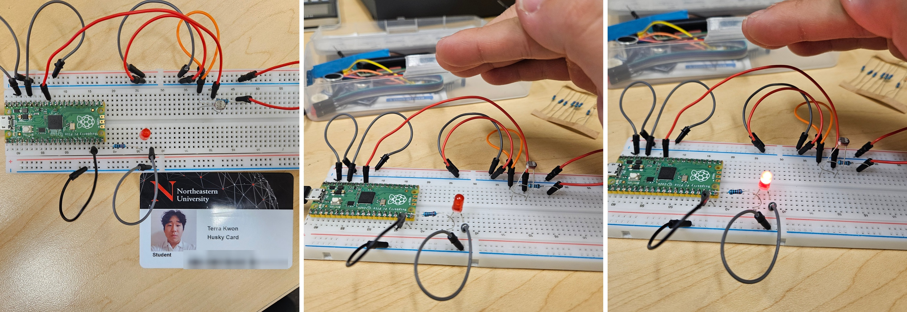
For Challenge 2 I edited the code so that when the LDR was covered (in the dark) the LED would flash on and off. Without it covered the LED would be turned off but start blinking when it was in the dark. The wiring of the breadboard for this challenge wasn’t different from the previous task, so I only edited the python code.
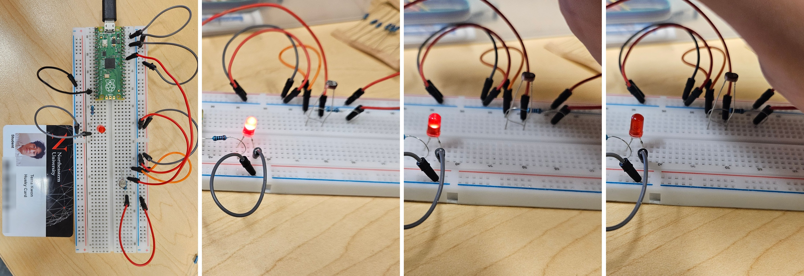
For Challenge 3 I reversed the original code so that when the LDR is exposed to light it’s at full brightness while when it is partially covered, the LED gets dimmer and, finally, when it is fully covered the LED turns off. The wiring of the breadboard is the same as Challenge 2 as only the code changed.
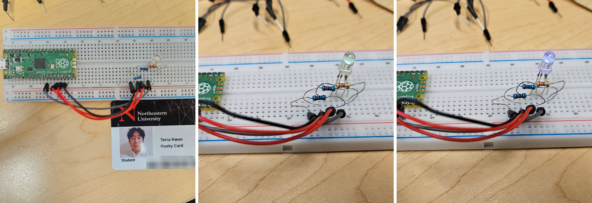
For Challenge 4 I edited the original code to make the RGB LED blink in order of the colors of the rainbow (red, orange, yellow, green, blue, indigo, and violet) and then after it went through all the colors it would turn off.
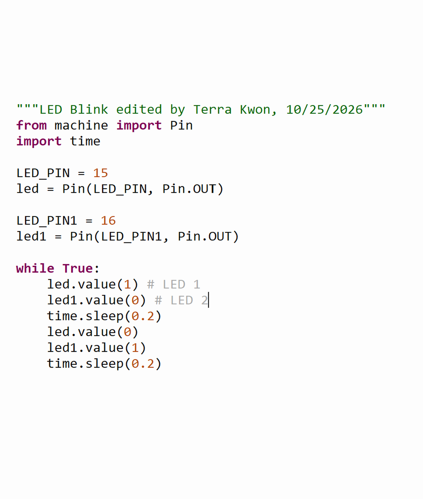
For Challenge 1, I edited the initial code that I was given to add another LED slot as can be seen by “LED_PIN1” and copied the code for the initial blinking led but made it alternate so at one time “LED_PIN” would be turned on but “LED_PIN1” would be turned off and this would alternate every 0.2 seconds giving the two LEDs on the breadboard a blinking effect.
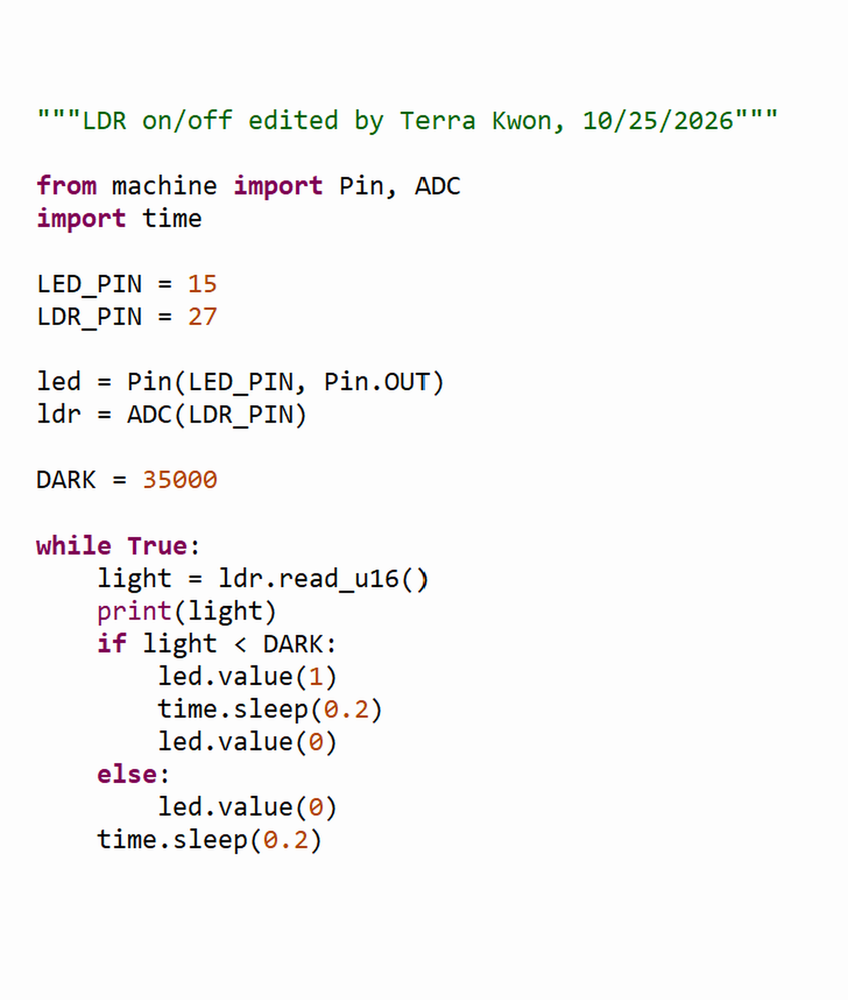
Most of the initial code was kept the same as they did not impact the overall way the LED lit up in when the LDR was covered. I only edited the indented if statement when “light < DARK” as that was what indicated what the Raspberry Pi should tell the LED to do when the LDR is covered. I edited the code so it would start blinking when it was covered.
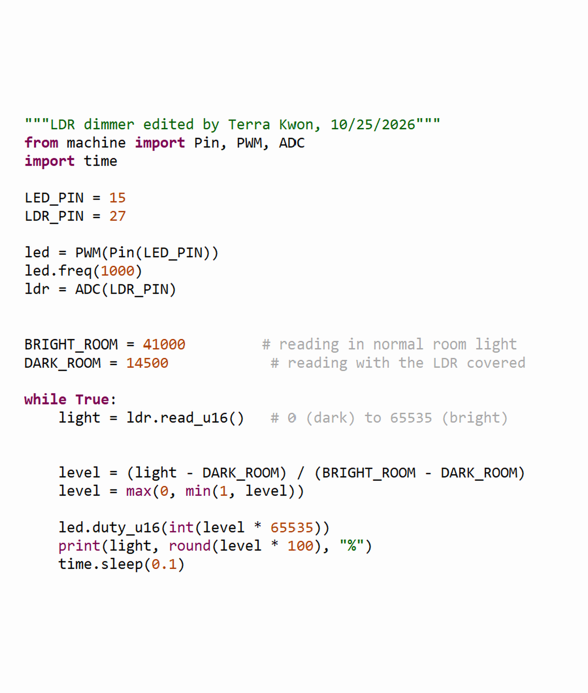
Most of the initial code was kept the same except the “level” variable as the original code was coded so that the light would get brighter if the LDR was covered more until it reached full brightness in complete darkness. The original code for the level variable was “(BRIGHT_ROOM - light) / (BRIGHT_ROOM - DARK_ROOM)” but I edited the front half of the equation to “(light – DARK_ROOM)” so that the LED would get brighter when the LDR was less covered.
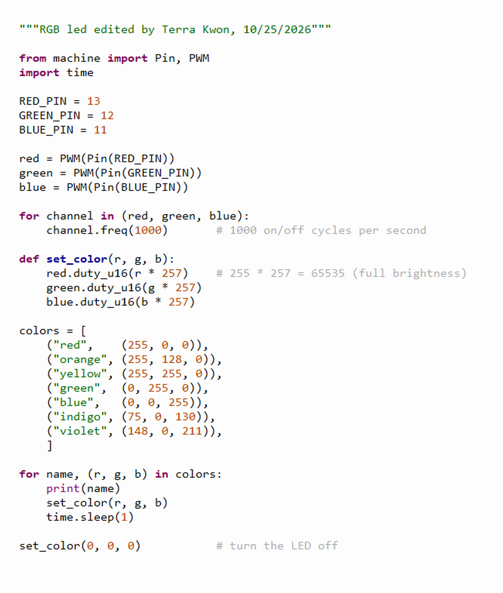
Most of the original code was kept the same except for the list that was contained in the “colors” variable as I changed them to match the colors to reflect the colors of a rainbow. The code is set so the RGB LED would go through each color from red to violet with 1 second between each blink


